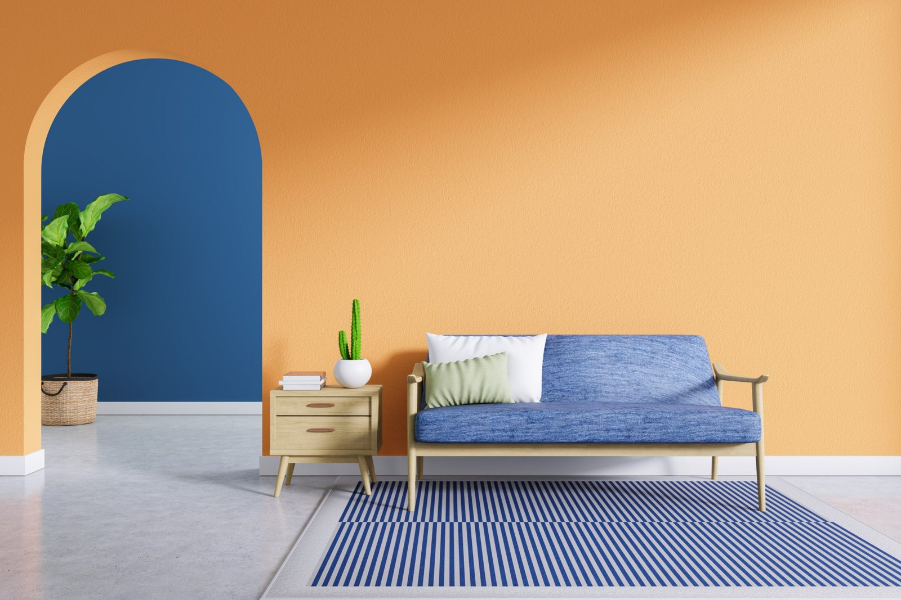
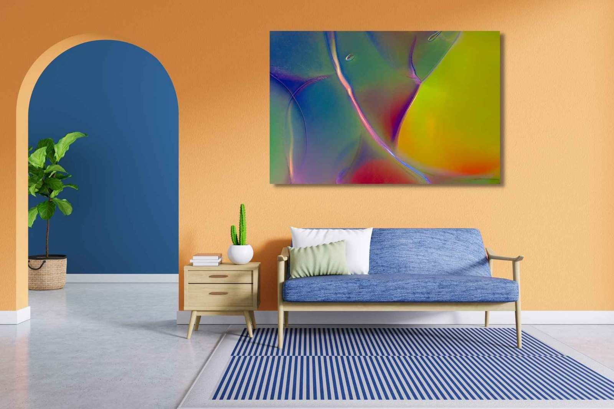

<!doctype html>
<html lang="en"><head><meta charset="utf-8"><meta name="viewport" content="width=device-width,initial-scale=1">
<title>How Virtual Art Consulting Works</title><meta name="description" content="The best way to save time, money, and frustration when it comes to buying wall art. Have you ever seen a painting, photograph, or other type of wall art and fel">
<meta name="robots" content="index,follow,max-image-preview:large">
<meta property="og:type" content="article">
<meta property="og:title" content="How Virtual Art Consulting Works">
<meta property="og:description" content="The best way to save time, money, and frustration when it comes to buying wall art. Have you ever seen a painting, photograph, or other type of wall art and fel">
<meta property="og:site_name" content="Omaste Witkowski Art">
<meta name="twitter:card" content="summary_large_image">
<link rel="canonical" href="https://omastewitkowski.com/blog/how-to-design-a-virtual-interior-with-wall-art.html">
<meta property="og:url" content="https://omastewitkowski.com/blog/how-to-design-a-virtual-interior-with-wall-art.html">
<meta property="og:image" content="https://omastewitkowski.com/media/dining-room-69793b.jpg">
<link rel="alternate" type="application/rss+xml" title="Omaste Witkowski Art blog" href="../feed.xml">
<script type="application/ld+json">{"@context": "https://schema.org", "@type": "BlogPosting", "headline": "How Virtual Art Consulting Works", "description": "The best way to save time, money, and frustration when it comes to buying wall art. Have you ever seen a painting, photograph, or other type of wall art and fel", "datePublished": "2022-07-24", "dateModified": "2026-10-11", "mainEntityOfPage": "https://omastewitkowski.com/blog/how-to-design-a-virtual-interior-with-wall-art.html", "author": {"@type": "Person", "name": "Omaste Witkowski", "url": "https://fineartamerica.com/profiles/omaste-witkowski"}, "image": "https://omastewitkowski.com/media/dining-room-69793b.jpg"}</script>
<link rel="icon" type="image/png" sizes="32x32" href="../assets/favicon-32.png"><link rel="icon" type="image/png" sizes="180x180" href="../assets/favicon.png"><link rel="apple-touch-icon" href="../assets/favicon.png">
<link rel="stylesheet" href="../assets/faasc.css"><link rel="stylesheet" href="../assets/site.css"></head>
<body><header class="top"><a class="brand" href="../index.html"></a>
<nav><a href="../index.html">Choose Your Own Art Adventure</a><a href="../my-story.html">My Story</a><a href="../rooms/index.html">Rooms</a><a href="../blog/index.html">Stories</a><a href="../gallery.html">Gallery</a><a href="../discount-club.html">Discount Club</a><a href="https://fineartamerica.com/profiles/omaste-witkowski" target="_blank" rel="noopener">Shop</a></nav></header>
<main><article class="story post"><p class="facts"><a href="index.html">Stories</a> · <time datetime="2022-07-24">2022-07-24</time> · Omaste Witkowski</p><h1>How Virtual Art Consulting Works</h1><figure class="post-img"></figure><h2>The best way to save time, money, and frustration when it comes to buying wall art.</h2><p>Have you ever seen a painting, photograph, or other type of wall art and fell in love with it instantly? Many people have and in fact, this is how they end up with art in their rooms. They see it, love it. and buy it. BUT if they haven’t looked at it virtually, in an actual room, they don’t know how it will look and/or if it will work. This is why it’s so important to design a virtual interior with wall art FIRST.</p><p>A virtual interior design is one where you get to see what a room will look like with the art actually on the wall. This type of design involves taking a photograph of the room first and then choosing one or more pieces of art to put in the room, and on the wall. This way you get to see what it will look like BEFORE you bring it home.</p><p>Many people make the mistake of buying the art first. Then they end up with art in storage or in places it doesn’t really fit. BUT you bought it, and most people/galleries don’t do returns. So once you have it, it’s yours.</p><h3>So how exactly does virtual art consulting work?</h3><figure class="post-img"></figure><figure class="post-img"></figure><figure class="post-img"></figure><p>A virtual art consultation is fast, painless, and full of fun! It will save you a ton of money AND you will end up with art that you know will work in the space you want to put it in. Keep reading to see how it works.</p><p>1. Take photos of the spaces you want to put art in so that you can see the art “virtually” in them.<br>To be really specific with sizing, use a measuring tape and painters tape that you can put on your wall without pulling any paint off of it. Put the tape on the wall in the approximate location you want the art to be in. Then use your measuring tape to measure that space. Voila! Now you know what size of art to purchase.<br>p.s. take the photo at the point you have the tape up on the wall so that you get the most accurate representation of the space you want the art in.</p><p>2. Share photo/photos of art you like and/or currently have in other spaces in your home, office, or other interior space.<br>This will help us to get an understanding of what you like and also the interior design vibe you already have going on. This way we can suggest art options that will complement existing spaces. You can also let us know what you have currently that you DON’T like and we will know what to avoid.</p><p>3. Let us know a bit about your personal style.<br>What type of design do you usually like, and/or is there a style you have currently to match, or change? Do you have an art style and/or artist that you like and/or you can send us an example of. Alternately, do you want to redesign and/or remodel and start fresh?</p><p>Last, but definitely not least, we will send you 3-5 mockups/art options for your room.<br>It’s that easy. You get to see what your art will look like BEFORE you bring it home!</p><p>This is what I call creating virtual interiors and it’s really fun and will save you a ton of money by trying out the art before you buy it!</p><h2>Now You Have A Quick, Easy, and Painless Way To Buy Art!</h2><p>No more guessing! Have complete confidence in your selections and no regrets! Now you have a way to not only find the best piece of art or photography for your walls, you can budget ahead of time and only spend what you can afford.</p><p>When we make impulse buys, they are emotional decisions which often times come with regret. Maybe we didn’t think something all the way through but now it’s too late to change. This is not a fun feeling and our mission is to help you avoid it!</p><p>Art is the most powerful tool in any room, and sets the tone for everything else. We help you discover attractive, aesthetically pleasing and creative artwork solutions that are functional in the space and enhance the quality of life, enjoyment and culture of the occupants.</p><p></p><h2>Just In Case You Do Change Your Mind</h2><p>It happens, you choose the art and when it shows up you decide you don’t want it anymore. In most cases, you are out of luck BUT in this case, you are not.</p><p>Our return policy is very simple. If you’re not happy with a purchase that you made through our virtual interiors service, for any reason, you can return it to us within 30 days of the order date. As soon as it arrives, we’ll issue a full refund for the entire purchase price. Please note – we don’t not reimburse the outgoing or return shipping charges unless the return is due to a defect in quality.</p><p>If you’ve hesitated to purchase artwork online in the past, why not give us a try? We make it quick and easy to find the perfect piece, AND you have nothing to lose!</p><aside class="subscribe"><span><b>A new piece, told in a thousand words.</b> Get each story as it is published.</span><span class="sub-b"><a class="faasc-btn" href="../feed.xml">Subscribe by RSS</a></span></aside><p class="post-next"><a href="../index.html">Find your own piece with the art adventure</a> · <a href="../gallery.html">Ask the gallery what fits your wall</a></p></article></main>
<footer>Artwork by Omaste Witkowski. Prints are made, shipped and guaranteed by <a href="https://fineartamerica.com/profiles/omaste-witkowski" target="_blank" rel="noopener">Fine Art America</a>.</footer>
</body></html>